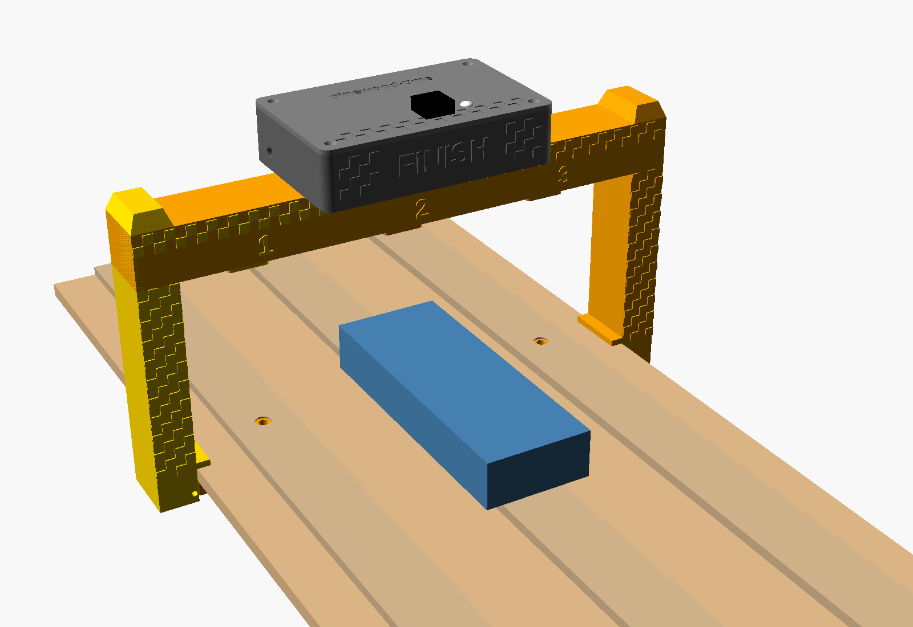
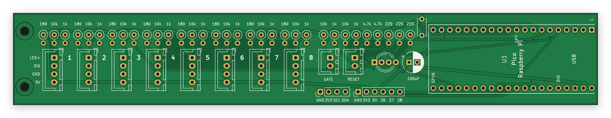
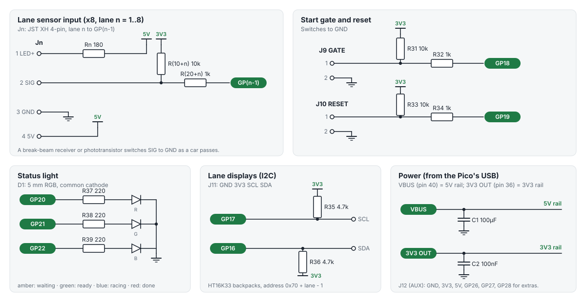
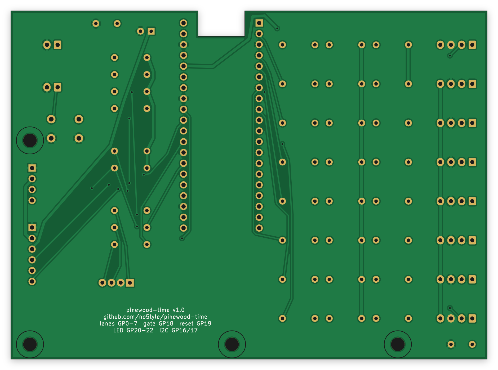
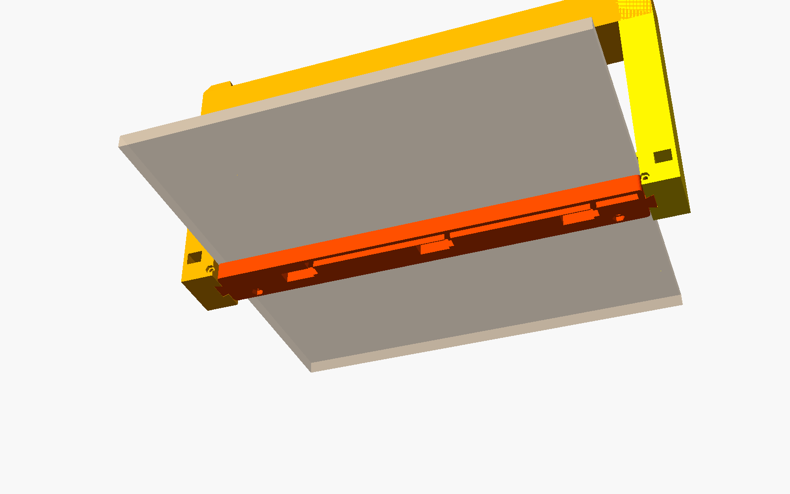
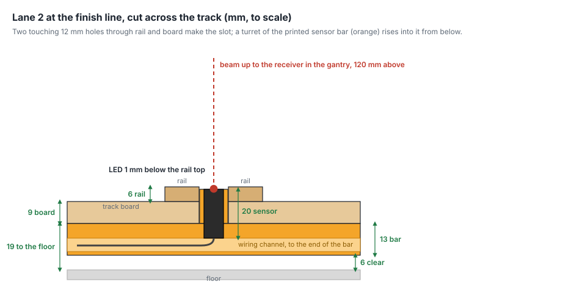
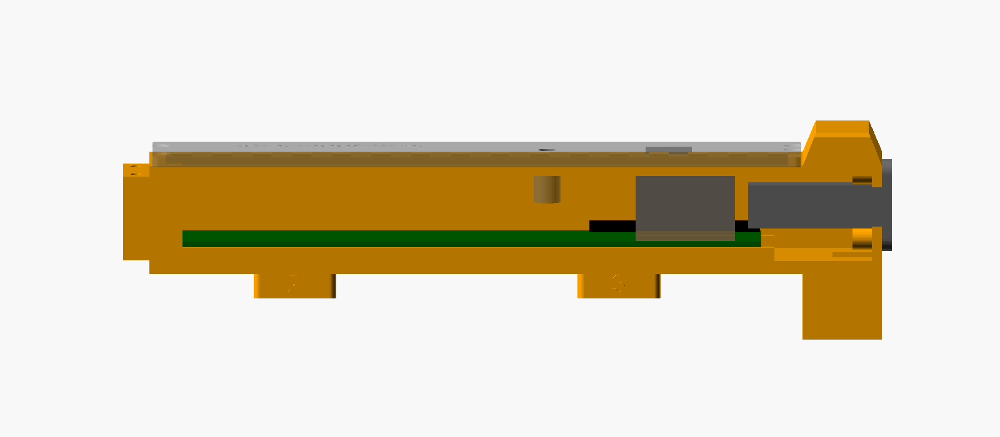
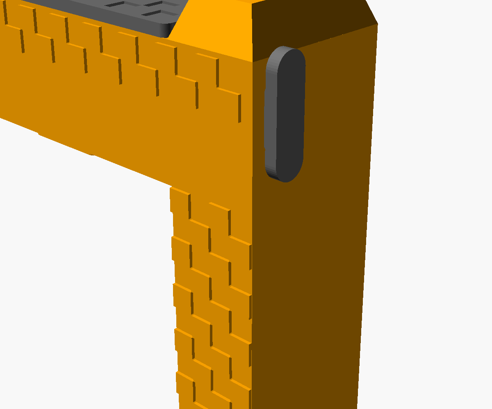

github.com/no5tyle/pinewood-time · board v1.1 · firmware 1.1.0 · November 2026. The board and gate pass their design checks, but no complete timer has been built and raced yet: treat your first build as the test, and report what you find.
A finish-line gantry that clamps onto the end of the track. A break-beam sensor watches each lane: an infrared emitter set into the rail shines up to a receiver in the gantry above, and a car crossing the line breaks the beam. The timer board inside the gantry's beam stamps each lane's crossing with the Pico's microsecond clock, counted from the moment the start gate drops, and sends the results to the race software over USB.
#button next) calls up the next heat.

screen)Everything for one 3-lane timer except the boards (JLCPCB, section 4) and the fasteners. Prices are rough, in Australian dollars with GST, from November 2026; check the listings before ordering.
| Qty | Item | For | About |
|---|---|---|---|
| 1 | Raspberry Pi Pico (or Pico H; solder it flat or on 2.5 mm headers) | U1 | $8–10 |
| 3 | Adafruit IR break-beam sensor, 3 mm LEDs (ADA2167) | one pair per lane | $6.20 each |
| 1 | SparkFun resistor kit, 1/4 W, 500 pcs (COM-10969) | 5 × 10k, 5 × 1k, 3 × 220 Ω | $15 |
| 1 | DFRobot JST connector kit (FIT0255) | lane, gate and reset sockets, plugs, crimps | $14 |
| 1 | 100 µF radial electrolytic, 6.3 mm, 2.5 mm leg spacing (CE05258) | C1 | $1 |
| 1 | 100 nF ceramic disc, 5 mm leg spacing (CE05188) | C2 | $0.40 |
| 1 | SparkFun RGB LED, 5 mm, common cathode (COM-09264) | D1, status light | $3.85 |
| 1 | 2.54 mm male header strip | J12 (1 × 6), and J11 if you fit displays | $1 |
| 1 | MX keyboard switch and a 1u keycap (any) | the button | $3 |
| 1 | Adafruit panel-mount USB-C to Micro-B cable, 30 cm (ADA4056) | USB-C socket on the gate | $10.60 |
| 1 | Lever microswitch | start gate | $2 |
| 1 | USB-C data cable (not charge-only) | gate to laptop | $8 |
| ~12 m | 2-core cable (alarm or speaker wire) | start gate switch, about 10 m | $6 |
About A$100 for the parts, plus the boards and fasteners. The resistor and connector kits leave plenty for more boards.
| Qty | Item | For |
|---|---|---|
| 2 | M3 × 35 bolts and nuts | joining the two gate halves |
| 2 | M3 × 40 bolts and nuts | lock pins through the legs and the sensor bar |
| 4 | M3 × 12 countersunk self-tapping screws | the top cover |
| 2 | M4 × 16 bolts and nuts | thumbscrews that clamp the gate to the track |
| 2 | M2.5 × 6 self-tapping screws | the board's left end |
| 6 | M2 × 10 self-tapping screws | one through each sensor's mounting hole |
hardware/fab/bom.md.Cheaper, slower (2–4 weeks), and you choose the seller, so check each listing's photos and dimensions. These are search terms rather than links, because listings come and go. The prices are typical figures for small packs, not quotes. Check them on the day.
| Qty | Search for | Check | Typical |
|---|---|---|---|
| 1 | "Raspberry Pi Pico RP2040" (official, from a store selling genuine boards) | Pico, or Pico 2 for the RP2350 build. Clones work if they're pin-compatible, but buy one marked Raspberry Pi if you can. | A$6–9 |
| 1 | "1/4W metal film resistor kit 600pcs" | Includes 10k, 1k, 220 Ω (and 4.7k). | A$3–5 |
| 1 | "XH2.54 connector kit 2P 3P 4P" with straight pin headers | Must say XH. KF2510 kits look alike but don't fit XH sockets. | A$4–7 |
| 1 | "electrolytic capacitor 100uF 16V 6.3x11" (or an assortment) | 6.3 mm diameter, 2.5 mm leg spacing. | A$2 |
| 1 | "ceramic capacitor 104 100nF 50V" (5 mm leg spacing) | Disc or multilayer, 5 mm pitch. | A$1–2 |
| 1 | "5mm RGB LED common cathode 4 pin" | Common cathode, legs in the order R, K, G, B (K the longest). | A$1–2 |
| 1 | "2.54mm single row male pin header 40P" | A$1 | |
| 1 | "MX switch" (Gateron, Outemu, Kailh) and "1u keycap" | 3-pin or 5-pin MX switch; plate-mount clips are what hold it in the cover. | A$3–6 |
| 1 | "panel mount USB type C female to micro USB male screw" | Must match the Adafruit one: 28 × 8.5 mm flange, M3 screws 20 mm apart, body 13 mm thick, about 40 mm long. Or adjust usb_cut in the model. | A$3–6 |
| 1 | "micro switch lever KW11" (or similar) | Normally-closed contact (C and NC terminals). | A$1–2 |
| 1 | "M2 M3 M4 screw nut assortment kit" (and M2.5 self-tappers) | See the fastener table on the previous page. | A$6–10 |
A mixed order (sensors from Core, the rest from AliExpress) comes to roughly A$50–60 plus the boards.
The board is ordered as Gerber files: one zip, hardware/fab/pinewood-time-gerbers.zip, from the
repository. JLCPCB is described here; PCBWay and others take the same zip.
Expect about US$5–10 for five boards plus shipping, arriving in one to two weeks.

Do this before soldering the Pico in, so you know it works.
dist/pinewood-time-pico.uf2 from the repository (or pinewood-time-pico2.uf2 for a Pico 2)..uf2 file onto it. The drive disappears and the Pico restarts as the timer./dev/ttyACM0 on Linux, /dev/cu.usbmodem… on a Mac; any baud rate). Send I: it replies with its version and settings.To update it later, either repeat this, or open the port at 1200 baud, which restarts the Pico ready for new firmware.
For 3 lanes, fit these and leave the rest empty. Empty places do no harm, and can be filled later for more lanes.
| Fit | Value |
|---|---|
| R11, R12, R13 | 10k (lane pull-ups) |
| R21, R22, R23 | 1k (lane series) |
| R31, R33 | 10k (gate, reset) |
| R32, R34 | 1k (gate, reset) |
| R37, R38, R39 | 220 Ω (status light) |
| C1, C2 | 100 µF, 100 nF |
| D1 | RGB LED |
| J1, J2, J3 | 4-pin JST XH (lanes 1–3) |
| J9, J10 | 2-pin JST XH (gate, reset) |
| J12 | 1 × 6 header (emitter power) |
| U1 | Pico |
| Leave empty | Why |
|---|---|
| R1–R8 | only for bare IR LEDs |
| R14–R18, R24–R28, J4–J8 | lanes 4–8 |
| R35, R36, J11 | lane displays (optional) |
#lanes 3 then #save.The files are in hardware/gate/stl/. All print without supports at 0.2 mm layers in PLA or PETG,
3 walls, 15–20% infill: about 400 g of filament in all.
| File | Qty | Size on the bed | Orientation |
|---|---|---|---|
left.stl | 1 | 124 × 185 mm | lying on its back, chequers up (as exported) |
right.stl | 1 | 230 × 185 mm | lying on its back, chequers up |
sensor_bar.stl | 1 | 307 × 30 mm | underside down; rotate 45° to lie diagonally on a 256 × 256 mm bed |
cover.stl | 1 | 196 × 40 mm | deck face down (as exported) |
led_lens.stl | 1 | tiny | print in white or clear |
mx_blank.stl | 1 | tiny | only if you're not fitting a key |
Two colours: the chequers and FINISH on the gate halves are raised 0.8 mm. Pause and change filament at 40.0 mm (the last 0.8 mm) for a two-colour gantry.
After printing: clear any strings from the sensor pockets and the dovetail sockets in the feet of the legs, and check an M3 nut drops into each hex pocket.

On Track E, the last section. The holes are the only change; nothing is screwed to the track, so the gate lifts off for packing.
That leaves 15 mm of rail either side of each hole, so the rail still guides the wheels. The sensor bar's turrets come up into the holes and stop 1 mm below the rail top.



In a serial terminal (send each line followed by Enter):
#lanes 3 #save
Other settings, all saved with #save:
| Send | Does |
|---|---|
#gate-trip low | if your gate switch works the other way round (races start when you lift the gate) |
#lane-trip low | if your sensors go high while they see the beam |
#button next | the key calls up the next heat (sends #next and types Enter) instead of resetting |
#button-key pagedown | the key that #button next types (enter, space, pagedown, f5, a letter...) |
I | shows the version and all settings |
test lanes=... gate=closed four times a second. Block each lane's beam with a hand or a car: its position should change to 1. Open the start gate: gate=open.B, then a line per lane, like 1 - 2.8734, and the light goes red.| What you see | Try |
|---|---|
| No serial port appears | Use a data cable, not a charge-only one. Re-flash the firmware (section 5). Check the Micro-B is fully in the Pico. |
| Status light stays off | D1 the wrong way round (long leg in the second hole), or its 220 Ω resistors missing. |
| Light blinks amber and never goes green | It's waiting for a reset: press the key, or send R. If it replies O, the gate reads as open: check the gate switch's wiring, or #gate-trip low. |
| A lane always shows tripped in test mode | Emitter not powered (check the AUX lead: GND pin 1, 5V pin 3), emitter and receiver not lined up, or the turret's bore blocked. |
| A lane never trips | Receiver wired to the wrong pins (white must be pin 2), or bright sunlight on the receivers. |
| Times only for some lanes | Check #lanes matches the track, and that the software hasn't masked a lane (U unmasks them all). |
| The gate rocks on the track | Tighten the thumbscrews; check the lock pins are through both the legs and the bar. |
dist/ | firmware files to flash |
hardware/fab/ | Gerbers and drill files, parts list (bom.md, bom.csv) |
hardware/gate/ | the gate: STL files, the OpenSCAD source and its own notes |
docs/wiring.md | sensor, gate, button and display wiring in detail |
docs/protocol.md | every serial command and setting |